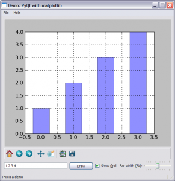

A few months ago I posted a couple of demo snippets for embedding matplotlib plots into wxPython GUIs.
Well, as I'm now in the process of moving to PyQt for my GUI needs in Python, I've reimplemented one of the demos with PyQt. Here's a screenshot:

And the demo itself can be taken from here.
The demo features:
- Using the maplotlib navigation toolbar
- Adding data to the plot dynamically
- Dynamically modifying the plot's properties
- Processing matplotlib events in the GUI
- Saving the plot to a file from a menu
The embedding of matplotlib into PyQt is relatively smooth and similar to wxPython, with a couple of tiny differences (which mainly have to do with how the two frameworks handle parenting of GUI elements). Note that I've reimplemented only one of the demos, but it's really sufficient for getting started with combining the two libraries.
Update (2019-01-10): Ondrej Holesovsky ported this sample to Python 3 and PyQt 5; the code is here.